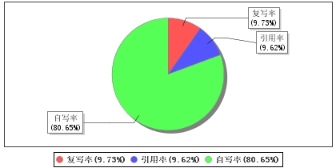

论文字数：17271个
总相似比：19.35(%) [即复写率与引用率之和]
检测指标：自写率 80.65 (%) 复写率9.73(%) 引用率9.62 (%)
其他指标：表格：0个 脚注：0个 尾注：0个

四、相似来源汇总
1、来源：大学生本科毕业论文联合共享库
篇名：《》
作者：11541450340047
出处：大学生本科毕业论文联合共享库 2018年
相似片段数：13
2、来源：互联网
篇名：《为什么要开发小程序外卖系统?_手机搜狐网》
出处：http://www.baidu.com/link?url=QRMmHqQtJtkRo6SWXOGCuy-o3NHDLa
相似片段数：1
3、来源：互联网
篇名：《外卖领域国内外研究现状综述_毕业论文》
出处：http://www.baidu.com/link?url=mbverxlFhs_ikYtEv7cdkycQ7cxO7a
相似片段数：1
4、来源：互联网
篇名：《redis数据库与go中的使用-简书》
出处：http://www.baidu.com/link?url=V87Dtee1NmIo8hJdR_K4ZfzI5tyxoc
相似片段数：1
5、来源：互联网
篇名：《maven的pom.xml的<dependency>标签不管加入什么jar包都报...》
出处：http://www.baidu.com/link?url=1l2oousp2G1IGcxzKEdckdAaQVCyRY
相似片段数：1
6、来源：互联网
篇名：《VJlTmbsQw--aOcijkM6-E4T3IqCa"target="_blank">协同办公系统比较-文化教育-道客巴巴》
出处：http://www.baidu.com/link?url=vVtF6HOnvBF0nk9fJLYHhoMPfrAbJp
相似片段数：1
7、来源：互联网
篇名：《基于微信小程序的点餐系统》
出处：http://www.baidu.com/link?url=MxNfYOilcsvOMZ4RJHfPDRibByFAu2
相似片段数：2
8、来源：互联网
篇名：《springboot进行事件监听有四种方式-qianxiaopeng的专..._CSDN博客》
出处：http://www.baidu.com/link?url=TflTNUdd3V_eXp-SlPHG6vbgG3V2Gi
相似片段数：1
9、来源：互联网
篇名：《基于微信小程序的点餐系统-电脑知识与技术2018年04期-手机知网》
出处：http://www.baidu.com/link?url=Hfx-FhfdpjzGHgKNLj0cwNUklbA4Yx
相似片段数：1
10、来源：互联网
篇名：《2018年餐饮行业发展趋势如何?_手机搜狐网》
出处：http://www.baidu.com/link?url=57aywD0Q6WTnl7XKbIHuE8b-omKc3a
相似片段数：1
11、来源：互联网
篇名：《软件开发的功能性需求和非功能性需求-AngelovLee-CSDN博客》
出处：http://www.baidu.com/link?url=HXASDDmOSMQEWql2-YqxzAfo041cP2
相似片段数：1
12、来源：互联网
篇名：《基于微信公众平台的智能点餐系统的设计与实现-道客巴巴》
出处：http://www.baidu.com/link?url=cb7h_DxHSw5-sTvwwuw0hWSgYyORtN
相似片段数：3
13、来源：互联网
篇名：《网络市场调研_百度经验》
出处：http://www.baidu.com/link?url=yVy9Oozlrcy0l7rjThZnoeeTYUsOue
相似片段数：1
14、来源：互联网
篇名：《餐饮版小程序-云+社区-腾讯云》
出处：http://www.baidu.com/link?url=gUH_O8wJg6ukUySoqdPu52Y99fG03m
相似片段数：1
15、来源：互联网
篇名：《基于微信小程序的点餐系统-南京廖华》
出处：http://www.baidu.com/link?url=lNGXvcuF38VyqJL2rO4WNWSM6WY3F9
相似片段数：2